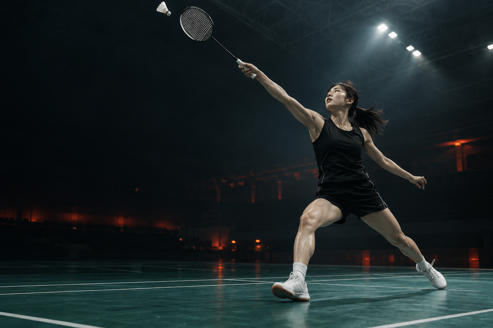
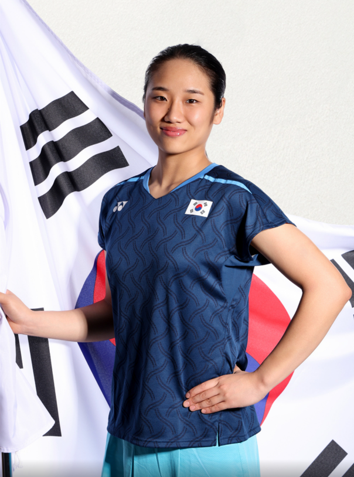

THE WOMEN’S SINGLES EDIT
BADMINTON / 2026
BEYOND
THE SCORE.결과 너머의 랠리를 보다.

점수는 결과를.
랠리는 이유를.
셔틀콕이 어디에 떨어졌는지보다,
왜 그곳으로 보냈는지를 보세요.
혼자 코트 전체를 지키는 여자 단식. 상대를 움직이고, 비어 있는 공간을 찾고, 다음 공을 준비하는 선택이 쌓여 한 점이 됩니다.
RALLY / AGAIN은 규칙이 낯선 시청자도 경기를 즐길 수 있도록 기본 정보와 세 가지 관전 포인트를 정리합니다. 가이드를 읽은 뒤, 2026 아이치·나고야 아시안게임 여자 단식 하이라이트로 이어집니다.
한 명이 만드는 코트 전체의 승부
21점 기준 · 20–20부터 듀스 적용
최대 3게임 중 2게임을 먼저 이기면 승리
출처: 2026 조직위원회 · Badminton BC ↗
셔틀콕 말고,
이 세 가지를.
하이라이트를 보기 전, 시선을 바꿔보세요.
궁금한 포인트를 누르면 코트 위에 펼쳐집니다.
강한 한 방 전에,
빈 공간이 먼저 생깁니다.
상대를 코트 뒤로 밀어낸 다음, 네트 앞에 짧게 떨어뜨리는 공을 찾아보세요. 득점 순간을 되돌려 보면, 그 전에 상대를 움직인 공이 보입니다.
득점 직전 두 번의 샷에서 상대가 어디로 이동했는지 보세요.
안세영.
이름을 아는 것에서,
경기를 읽는 것으로.
배드민턴 여자 단식 세계랭킹 1위. 2023년과 2026년 세계선수권 여자 단식 정상에 오른 안세영은, 2026 아이치·나고야 아시안게임에서 이 종목 최초의 2연패를 달성했습니다.
2026년 10월에는 덴마크 오픈에서도 2년 연속 우승했습니다. 아시안게임 8강에서는 상대를 움직이는 코스를, 야마구치 아카네와의 결승에서는 수비 뒤 다음 공을 준비하는 움직임을 따라가 보세요. 선수의 이력을 아는 데서 한 걸음 더 나아가, 한 점을 만드는 과정을 읽을 수 있습니다.
출처: Korea.net (2026.10.19) · YONEX · KBS WORLD

다시 보는 순간,
다르게 보이는 경기.
AICHI–NAGOYA 2026안세영 vs
라차녹 인타논
스코어보다 한 발 먼저.
코스, 복귀, 템포를 따라 다시 보는 하이라이트.
궁금한 건,
여기서.
01하이라이트는 어디에서 볼 수 있나요?
‘다시 볼 경기’의 카드는 안세영 vs 라차녹 인타논 여자 단식 8강으로, 페이지 마지막의 ‘결승 하이라이트 보기’ 버튼은 안세영 vs 야마구치 아카네 여자 단식 결승으로 연결됩니다. 두 영상 모두 CHZZK의 공식 SBS 채널에서 시청하며, 이 사이트가 직접 중계하거나 영상을 보관하지 않습니다.
02규칙을 몰라도 볼 수 있나요?
네. 먼저 ‘상대 코트에 셔틀콕을 떨어뜨리거나 상대의 실수를 유도하면 득점한다’는 점부터 기억하세요. 2026 대회 안내 기준 한 게임은 21점이며 최대 3게임 중 2게임을 이기면 승리합니다. 듀스 규칙은 위 핵심 정보에서 확인할 수 있습니다.
03여자 단식에서는 무엇을 먼저 봐야 하나요?
처음에는 샷의 이름을 외우기보다 상대가 어디로 이동했는지를 보세요. 그다음 샷을 친 선수가 어디로 복귀하는지, 긴 공과 짧은 공을 어떻게 섞는지 따라가면 됩니다. 위 관전 가이드에서 세 가지 포인트를 눌러볼 수 있습니다.
04경기 결과를 미리 알아야 하나요?
필수는 아닙니다. 이 페이지는 경기별 최종 스코어 대신 관전 방법을 안내합니다. 선수 소개에는 주요 우승 이력이 포함되어 있습니다. 외부 영상의 제목이나 썸네일에는 결과가 포함될 수 있습니다.
05공식 대회 사이트인가요?
RALLY / AGAIN은 수업 실습을 위한 학습용 기획물입니다. 공식 대회·협회·선수 운영 페이지가 아닙니다. 대회 및 규칙 정보는 아래 출처를 바탕으로 정리했습니다. 코트의 연출 이미지는 AI로 만든 가상의 선수이며, 선수 소개의 안세영 사진은 사용자가 제공한 실제 사진입니다.
좋은 관전은,
정확한 정보에서.
공식 정보와 관전 제안을 구분합니다. 대회·선수 이력은 아래 자료를 참고하고, 전술 설명은 입문자를 위한 편집 가이드로 제공합니다.
- 01아이치·나고야 2026 조직위원회종목·경기 방식·경기장 안내↗
- 02Badminton BC — The Laws of BadmintonBWF 규칙 요약 · 기본 득점·듀스 규칙↗
- 03Korea.net — 안세영의 덴마크 오픈 우승세계랭킹 1위·아시안게임 2연패 / 2026.10.19↗
- 04SBS — 여자 단식 8강 하이라이트영상 제목·매치업 / CHZZK↗
- 05SBS — 여자 단식 결승 하이라이트안세영 vs 야마구치 아카네 / CHZZK↗
- 06KBS WORLD — 세계선수권 두 번째 우승2026 세계선수권 여자 단식 우승 이력↗
코트 이미지: OpenAI ImageGen (AI 생성) · 안세영 사진: 사용자 제공
WATCH.
FEEL.
AGAIN.
8강에서 읽은 움직임을, 결승에서.
안세영과 야마구치의 마지막 승부를 만나보세요.
출처: SBS / CHZZK